Bản chốt: hai phần giao diện, một màu thương hiệu xanh ngọc lục. Nhân viên dùng trang đặt món kiểu app (thẻ ảnh, giỏ bên phải). Hành chính dùng phần mềm quản lý (sidebar, bảng). Mỗi màn hình có ảnh và nút mở bản tương tác.
Hero xanh với số ngày còn lại, nhóm món dạng chip, thẻ ảnh với nút −/+, giỏ đăng ký bên phải. Sau khi khóa: chỉ đọc, hiện tiến độ giao từng món.
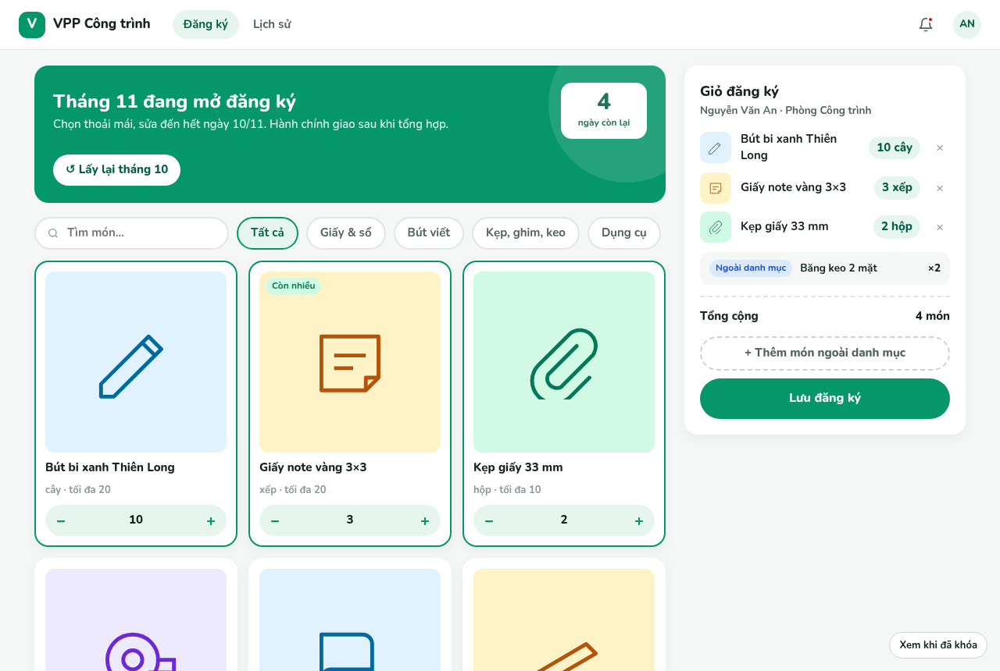
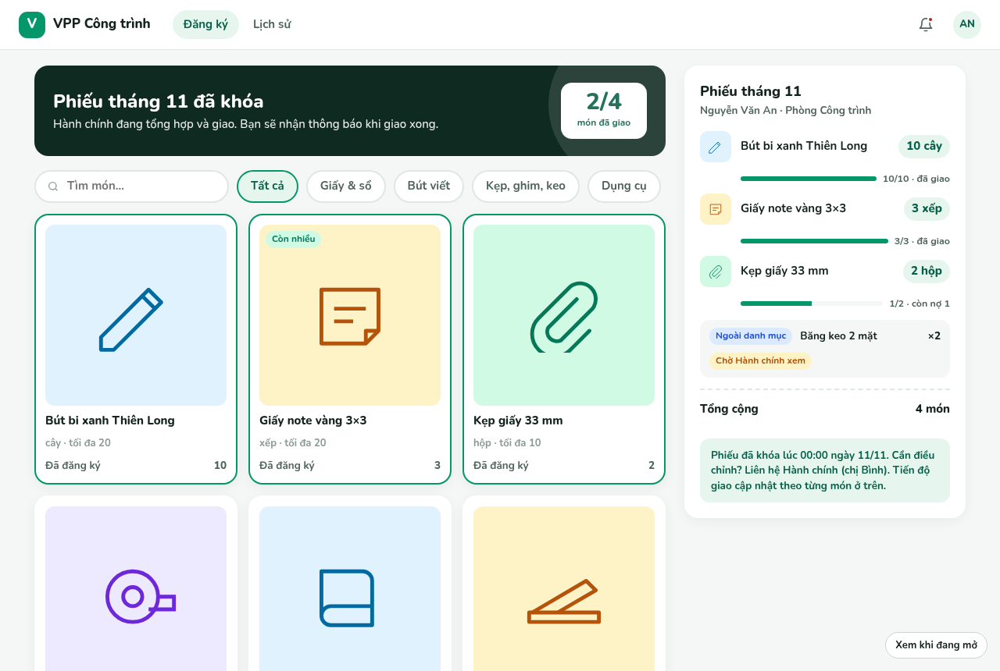
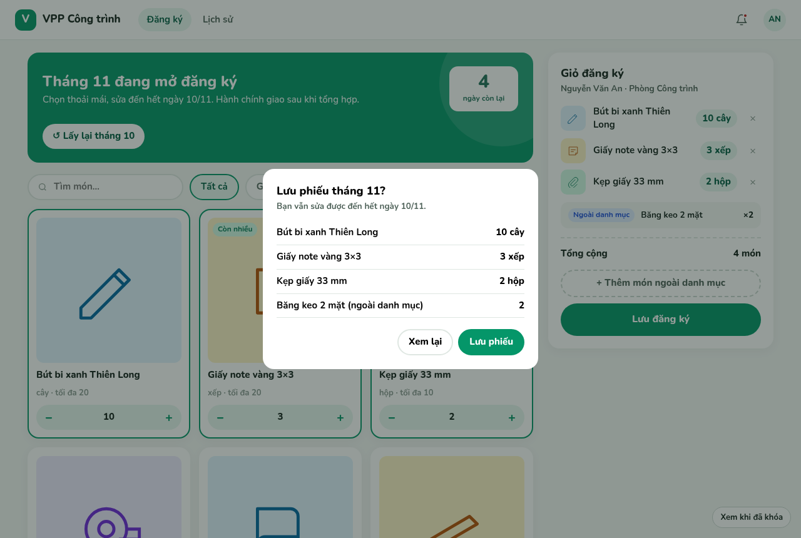
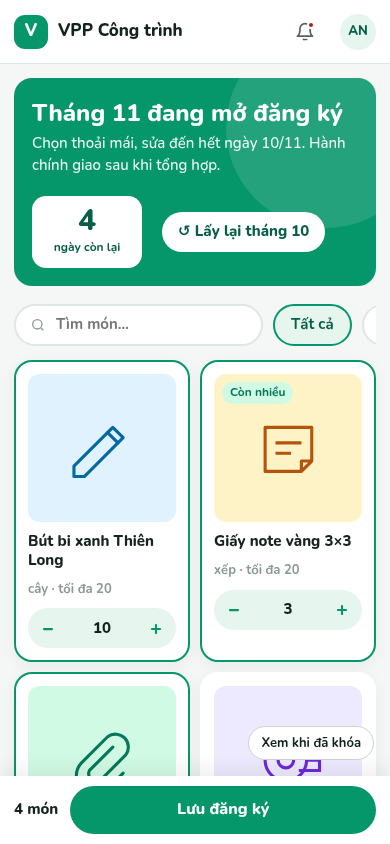
Sidebar xanh đậm, KPI bấm để lọc, bảng theo tổ với thanh tiến độ giao. Ngăn điều chỉnh: dòng đã sửa tô xanh nhạt kèm giá trị cũ, món ngoài danh mục có 3 nút, lý do bắt buộc.
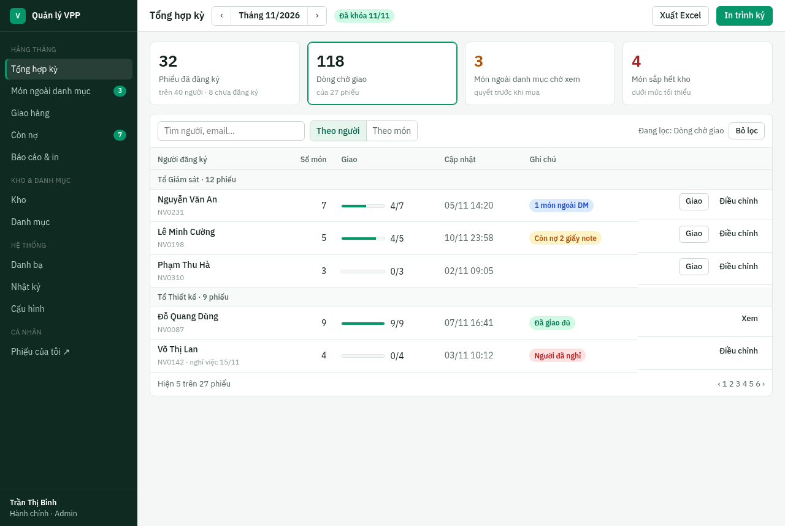
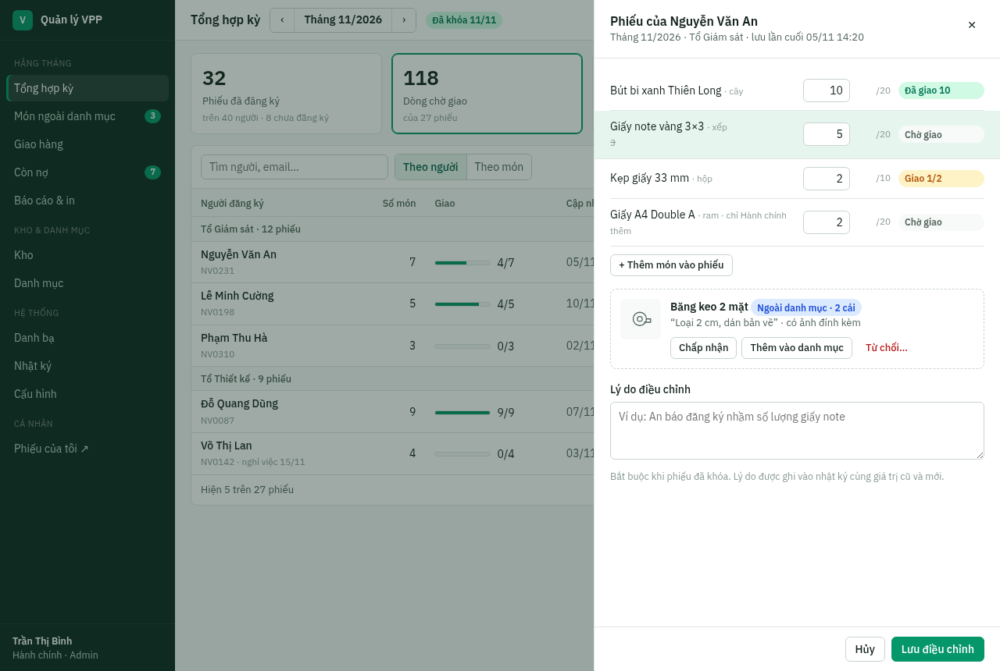
Email công ty → PMH ID. Quản trị kỹ thuật gõ tên tài khoản nội bộ (SA local).
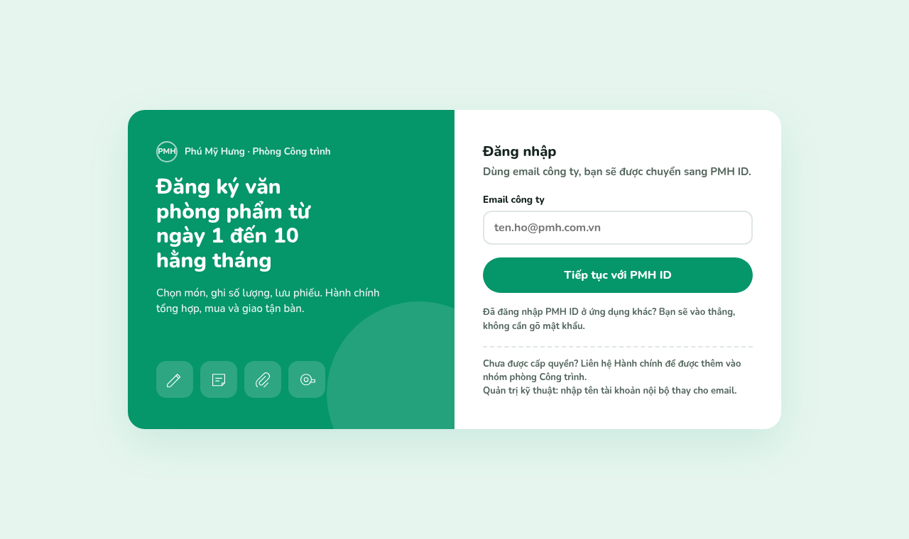
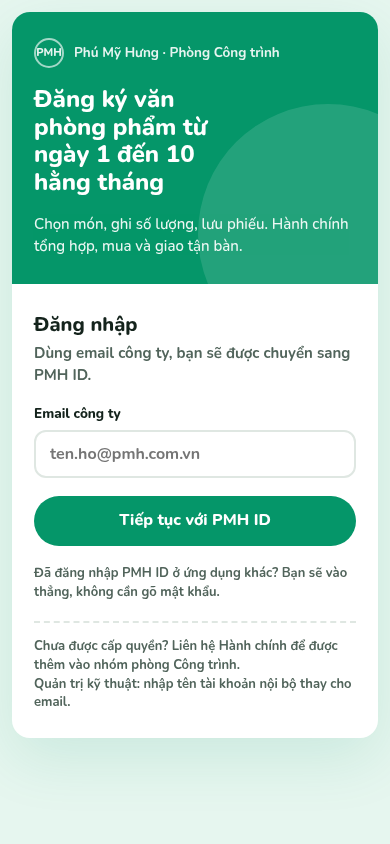
Giữ lại để đối chiếu: ba phong cách A/B/C và bản giấy note.
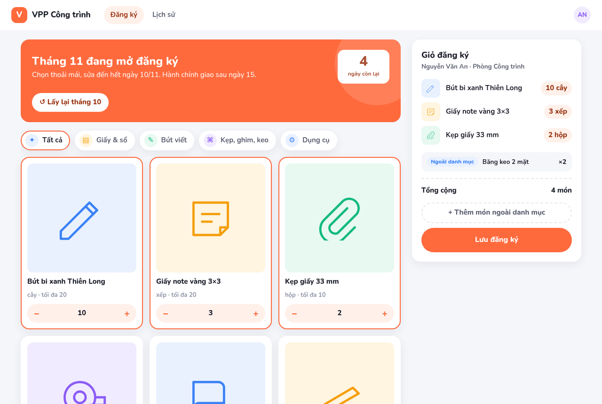
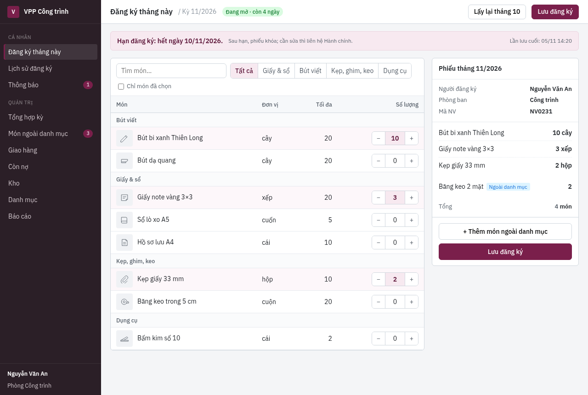
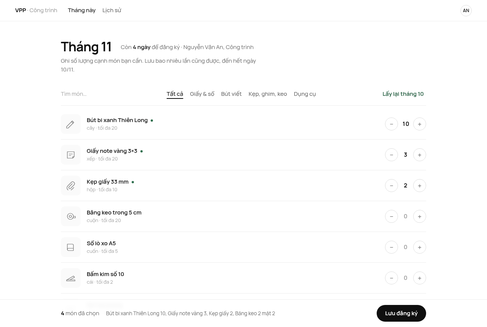
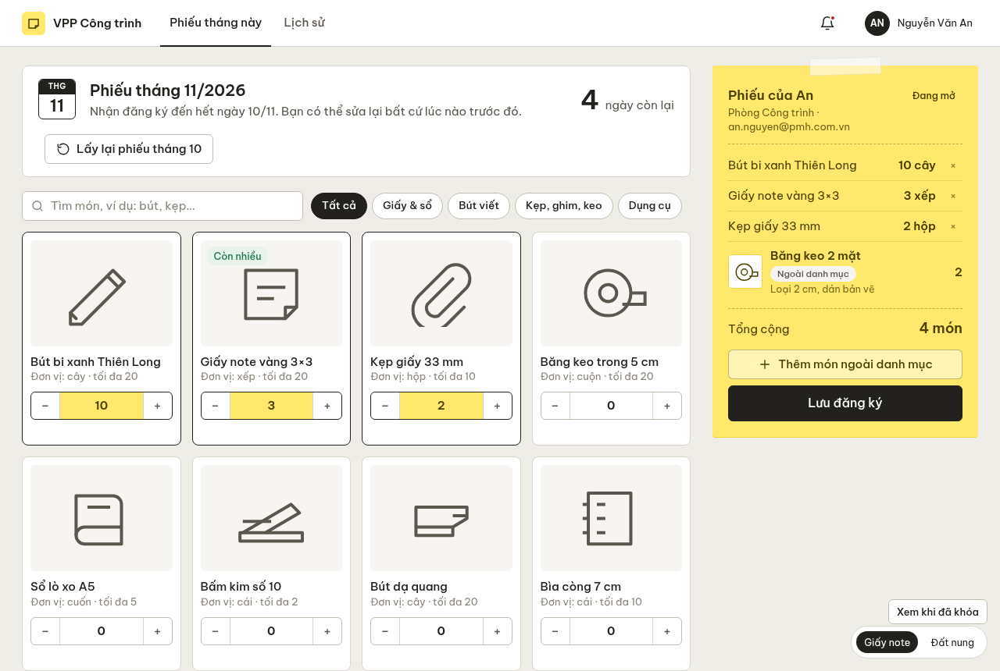
Ảnh món là hình minh hoạ; bản thật dùng ảnh do Hành chính chụp. Số liệu là ví dụ.